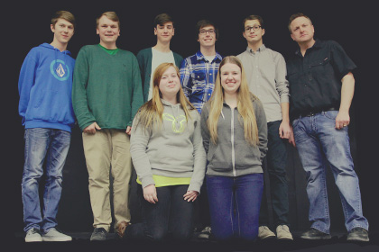

The 5th Winnipeg DrumTalk Festival
The 5th Winnipeg DrumTalk Festival is taking place on Saturday March 15th, 2014 at River East Collegiate from 11:00am - 4:30pm. For more information contact The Music Cellar: 204 253 5170 or email themusic@mymts.net
Reserve Tickets
Victoria Sparks
Victoria Sparks holds a bachelor of Music and Education from the University of Manitoba, where her teachers included Jauvon Gilliam and Rob Gardner. In 2010, Sparks graduated from Butler University, where she had the opportunity to study under Jon Crabiel, completing a Masters in Percussion Performance. Victoria has also had instruction from Craig Hentrick, Julie Spencer, Johnny Lee Lane and Jack Van Geem, and has had the exciting opportunity to work as a technical consultant for Dame Evelyn Glennie on several occasions.
Eric Platz
Facebook LinkEric is a multi-faceted drummer and percussionist whose performing career encompasses a diverse array of styles including jazz, Americana, Afro-Cuban, Arabic and North African music. Eric has toured extensively throughout North America performing at venues including the Blue Note and Lincoln Center in New York City, Symphony Hall in Boston, Tipitina’s in New Orleans, the Pabst Theater in Milwaukee, and the Troubadour in Los Angeles. Eric is endorsed by Vic Firth Drumsticks

Jeff Kula
Jeff is currently the director of bands at River East Collegiate in Winnipeg, Manitoba, Canada. His duties include directing the Grade 10 Concert Band, Grade 11 and 12 Concert Band, Wind Ensemble, Jazz Band, Jazz Orchestra, Contemporary Music Ensemble and Percussion Ensemble. He is also on faculty at the University of Manitoba's Marcel A. Desautels Faculty of Music where he has taught the Percussion Techniques course for the past seven years.

River East Percussion Ensemble
The River East Collegiate Percussion Ensemble is comprised of eight 15-18 year old musicians in grades 10, 11 and 12 at River East Collegiate in Winnipeg, Manitoba, Canada. The ensemble performs a wide variety of repertoire encompassing many styles and eras of percussion history.

Owen Clark
linkOwen is a drummer, percussionist, vocalist, bass player, composer/arranger, historian, author and radio announcer. He graduated from McGill University in 1971 and from Moorhead State University in 1974.Currently he performs with the Owen Clark Band, the Owen Clark Big Band and the Owen Clark Jass (sic) Band. He is the drummer for the Merv Mauthe Quintet and percussionist with the Rupertsland Brass Band.

Chris Lesso
Twitter Facebook YouTube LinkChris is a Drummer, Speaker, Educator in Toronto, Canada. Chris is endorsed by Sonor Drums, Sabian Cymbals, Evans Drumheads, and Vic Firth Sticks.

Al Webster
Twitter Facebook googleplusAl is a freelance drummer who has performed and recorded with artists such as Amanda Marshall, Colin James, Jeff Healey, Big Sugar, Jack Bruce, David Wilcox, Long John Baldry, Jaco Pastorius, Robben Ford, Edgar Winter, Mavis Staples, Ian Gillan, and Zachary Richard.
Al uses Yamaha Drums, Sabian Cymbals, Vic Firth Sticks, Remo Drumheads, Sennheiser Mics, Ableton Software, Stageworks gear, Tuner Fish Lug Locks, Kelly Shu Shock Mounts, and Billdidit Percussion Accessories.

Lucas Sader
Twitter Facebook Vimeo LinkAt 23 years of age, Winnipeg-based drummer Lucas Sader has established himself as a composer, arranger, bandleader, educator, and writer. Sader recently graduated with his Bachelor of Jazz Studies Degree in Drumset Performance from The University of Manitoba Marcel A. Desautels Faculty of Music (2013). While still enrolled in the program, Sader recorded and released his debut album as a leader with The Lucas Sader Project, titled Apollo: Tribute to the Miles Davis Quintet.